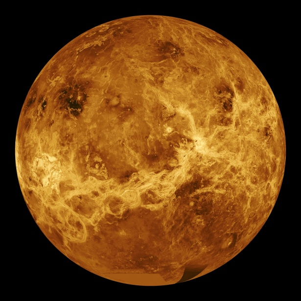
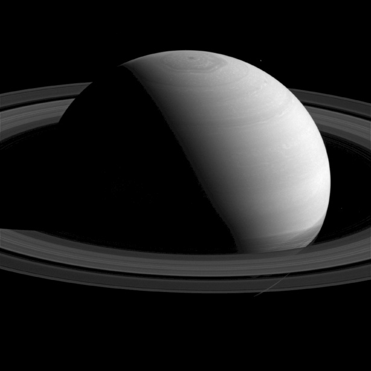

|
SolEl Sol, es una estrella de tipo-G de la secuencia principal y clase de luminosidad V que se encuentra en el centro del sistema solar y constituye la mayor fuente de radiación electromagnética de este sistema planetario. |
MercurioMercurio es el planeta del sistema solar más cercano al Sol y el más pequeño. Forma parte de los denominados planetas interiores y carece de satélites naturales al igual que Venus. |
|
|  |
VenusVenus es el segundo planeta del sistema solar en orden de proximidad al Sol y el tercero más pequeño después de Mercurio y Marte. Al igual que Mercurio, carece de satélites naturales. Recibe su nombre en honor a Venus, la diosa romana del amor. |

|
TierraLa Tierra (del latín Terra, deidad romana equivalente a Gea, diosa griega de la feminidad y la fecundidad) es un planeta del sistema solar que gira alrededor de su estrella —el Sol— en la tercera órbita más interna. Es el más denso y el quinto mayor de los ocho planetas del sistema solar. También es el mayor de los cuatro terrestres o rocosos. |

|
MarteMarte es el cuarto planeta en orden de distancia al Sol y el segundo más pequeño del sistema solar, después de Mercurio. |

|
JúpiterJúpiter es el planeta más grande del sistema solar y el quinto en orden de lejanía al Sol. Es un gigante gaseoso que forma parte de los denominados planetas exteriores. Recibe su nombre del dios romano Júpiter. |
|  |
SaturnoSaturno es el sexto planeta del sistema solar contando desde el Sol, el segundo en tamaño y masa después de Júpiter y el único con un sistema de anillos visible desde la Tierra. Su nombre proviene del dios romano Saturno. Forma parte de los denominados planetas exteriores o gaseosos. |

|
UranoUrano es el séptimo planeta del sistema solar, el tercero de mayor tamaño, y el cuarto más masivo. Se llama así en honor de la divinidad griega del cielo Urano, el padre de Crono y el abuelo de Zeus. |

|
NeptunoNeptuno es el octavo planeta en distancia respecto al Sol y el más lejano del sistema solar. Forma parte de los denominados planetas exteriores, y dentro de estos, es uno de los gigantes helados, y es el primero que fue descubierto gracias a predicciones matemáticas. |